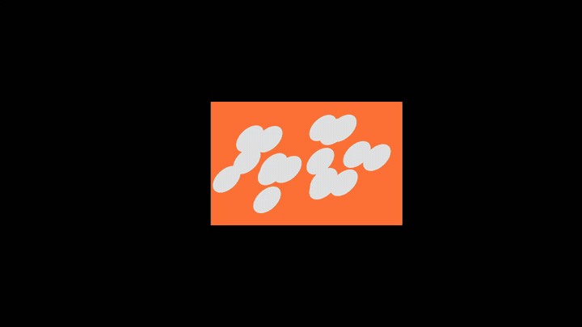
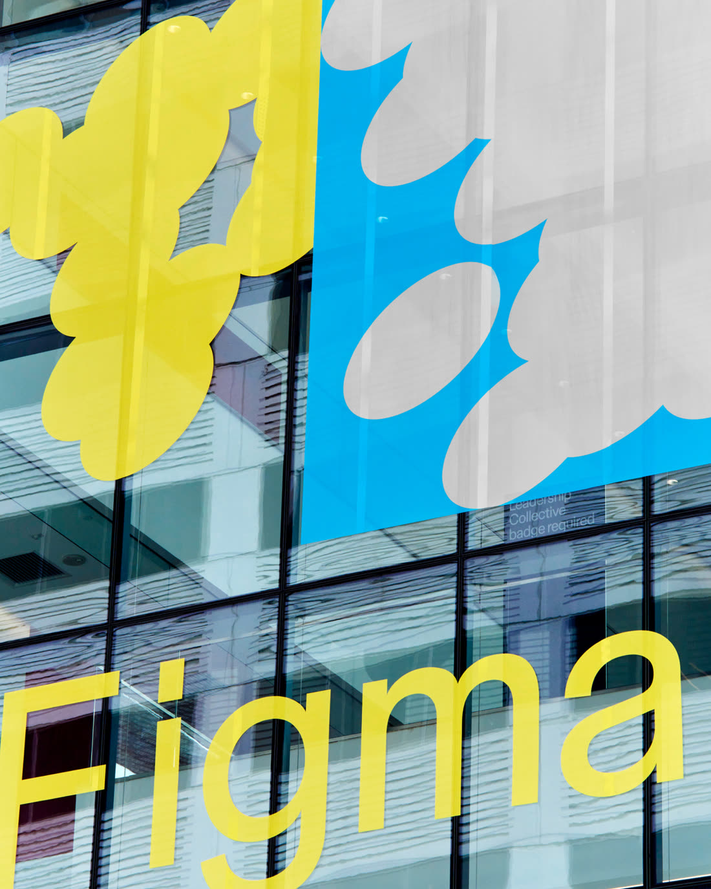
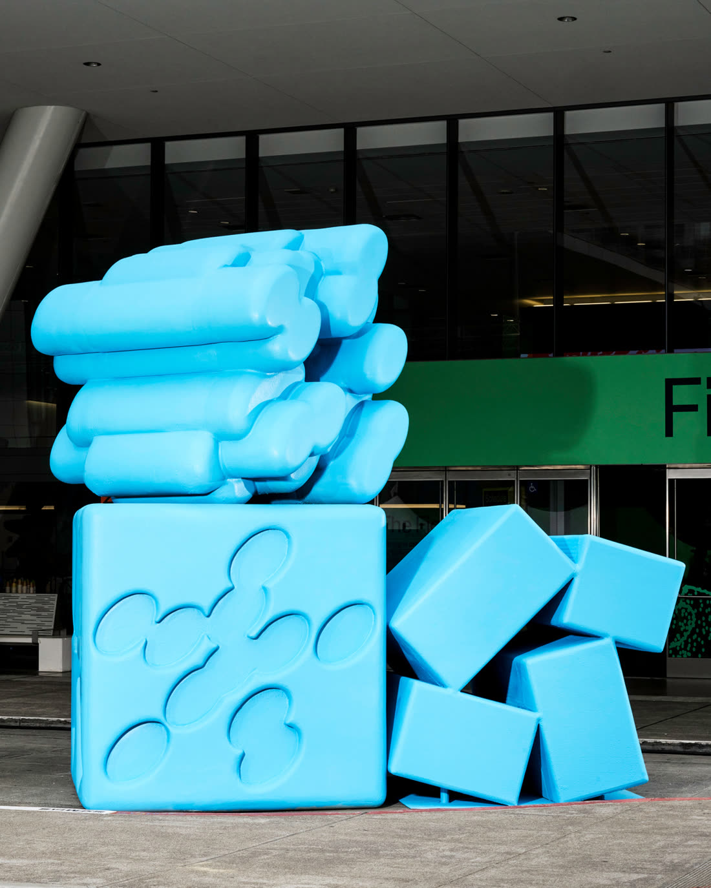
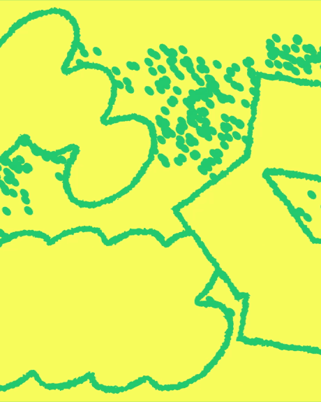
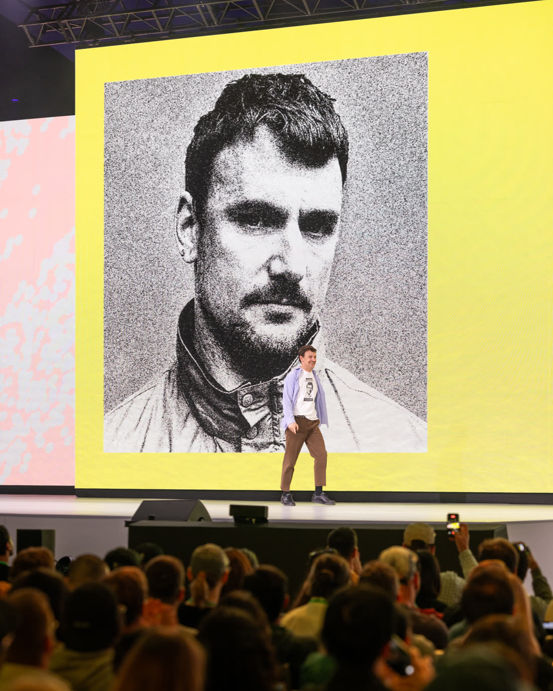
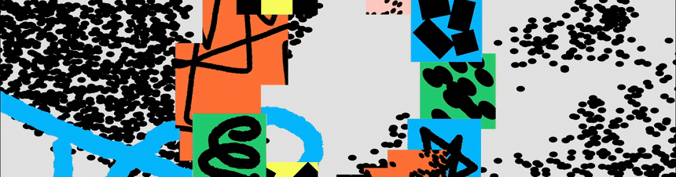
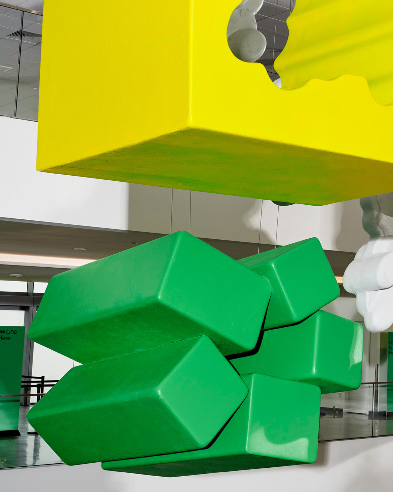
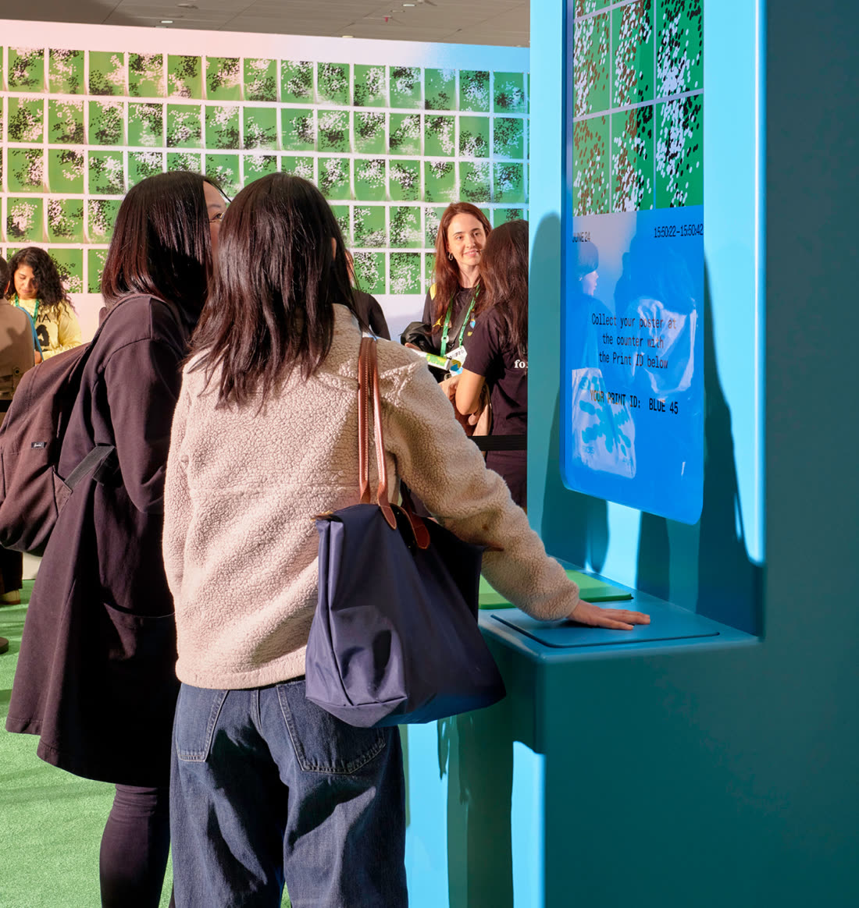
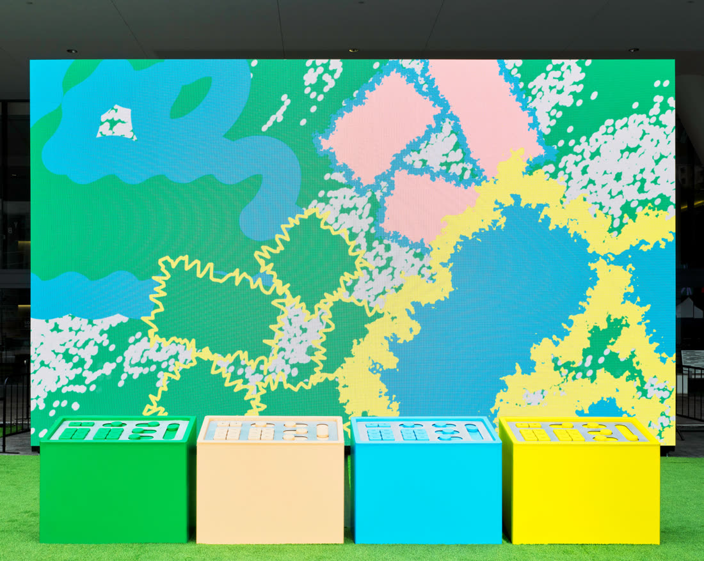
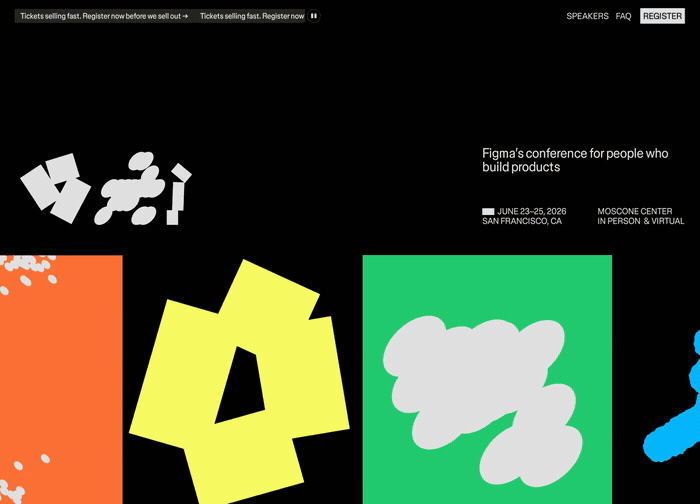

Config 2026 结束之后，我把 Figma 的预设 shader 一个个调过一遍，拿 3D-to-2D perspective 做中心的立体形，Pattern grid 铺底纹，形状、图案、颜色换着组合，质感确实比我自己手搓渐变强一档。调到 Mesh gradient 就有点扫兴，它是固定 16 个可编辑颜色点的平滑网格渐变，点的数量改不了；想让 3D-to-2D perspective 的几何和光影一起呼吸，又发现它根本不支持打关键帧。
我调预设材质最后卡在参数改不动
Motion 那边的体验要好得多，把一段调好的 Scale 动效配合 Variants，一次就套到首页、心、文档、头像这一整组图标上，动效在我这儿终于像组件一样能复用了。可材质这条线上，我能动的只有别人替我留好的那几个滑杆。预设给的是一套已经收敛过的参数范围，超出这个范围的想法，滑杆上根本没有对应的位置。我那时候的打算就是等 Agent 到位，再自己创建趁手的工具。
Figma 自己的品牌团队做 Config 2026 这套视觉，走的就是这条路，他们根本没碰预设。6 月 23 到 25 日的 Config 在旧金山 Moscone Center 办，从玻璃幕墙到讲者头像到线下装置，整套视觉背后是他们自己搭的几个小工具。

三套材质是他们在 Figma Make 里现搭工具做出来的
Brand Studio 的创意主导是品牌设计师 Chelsea White，她给这套视觉定的三条线是演化、流动、和谐，说白了就是想法可以被反复混剪重做，起点可以随便挑、在设计和代码之间来回绕，以及用生成工具做探索的时候别把人的判断丢掉。
为了做出那种和 AI 合作时才会出现的意外感，团队反过来用 AI 搭工具。他们在 Figma Make 里做了几个工具，先把想要的那种粗糙效果固定下来，最后收敛出三套核心材质，潦草线条、模糊渐变、椭圆颗粒。工具做好之后往里喂图，出来的构成就带着手绘的意外。"在这样一个工具能让我们自动化更多、做出更完美视觉的时代，我们反而想珍惜一点不完美的痕迹，"品牌设计师 Maria Chimishkyan 说。
这句话要是只停在理念上，我不会太当真。他们顺手做的第二件事更能说明问题，一个 dithering 工具，把上百张讲者头像一次性处理成统一的抖动网点效果，省掉几个小时的重复劳动。品牌设计师 Deanna Sperrazza 的说法是，这个效果有一种细密的点彩感，带着手工的温度，同时又明显是被代码算出来的。
上百张头像统一改一种质感，以前是外包或者加班的活儿；写一个工具跑一遍，成本就从人力变成一次调试。设计师用 AI 最划算的方式就在这儿，把重复的那一层做成工具，一次调试换掉几百次抽卡。
视觉系统的主体是 glyph，一批表现力很强的形状，从潦草的手写感一路排到生成感、再到干净利落的几何。颗粒状的 glyph 用来表示想法正在生成和增殖，规整的矩形代表已经想清楚的那部分，这些 glyph 后来被做成 14 英尺（约 4.3 米）高的泡沫雕塑摆在现场。




动效和静态两条线并行推进
这套视觉里我最认可的做法在动效环节。团队没有先把静态视觉定稿再丢给动效，两条线是并行做的。"这是一种很舒服的来回，"品牌动效设计师 Ben Hill 说，"动效影响设计，设计也影响动效。"有个细节能说明问题，他们第一次看到一个早期 glyph 动起来时是个恍然大悟的时刻，那个构成其实很简单，但那种粗糙和意料之外让他们确定方向是对的。
Ben 的原话是，他们本来完全可以退回到干净利落的 glyph 动画，但最后让所有元素都更松、更拼贴、更有表达欲，这种带立场的感觉是 Figma 独有的。开幕 keynote 那支片子是和动效工作室 Relay 一起做的，glyph 和材质在里面穿线、堆叠、循环，最后一路冲出画框。

对我这种习惯先把视觉定稿、再考虑怎么动的人来说，这条并行的路子值得抄。动效本身带着一部分造型判断，等静态定稿之后再补，能动的空间已经被自己封掉了。
线下装置让人亲手操作品牌自己的工具
落到三维，团队用的主材是挤出泡沫，够轻、也容易做出想要的质感和形状。Maria 提到一个取舍，你会以为一条不完美线稿的三维版本是空间里的一根铁丝，但如果它其实是被厚厚地挤出来的呢。一组超大号的挤出 glyph 就挂在 Moscone 大堂，她形容那是一个把整套视觉理念全装进去的、形式上放纵又好玩的时刻。

现场几个装置的思路很一致，都是把 Figma 里的工具搬到手上。Play Canvas 是一块巨型数字画布，配放大版的 Figma Draw 工具让人随手涂；Shared Frequency 是一个 Figma Make 原型装进实体 kiosk，两个人把手按在上面，Make 就用 Config 视觉里的圆点生成一张独一无二的图案打印出来；Collage Remixer 用旋钮和滑杆控制屏幕上的 glyph 和材质，Deanna 说那是一种很有触感的操作方式，逻辑跟在 Figma 里调 components 和 dynamic strokes 一样。还有一面 Particle Pins 针阵装置，纯手动、纯感官，一点数字成分都没有。


音频交给了伦敦的 Sounds Like These，三首曲子各表达一种创作状态，软胶唱片上那版叫 Music for Making，Spotify 上那张叫 Open, Connect, Feel；讲者上台的走场音乐更利落有劲，软胶唱片这版更古怪、更氛围。官方还在 Figma Community 放了一套数字海报包，图形是有限的，排法随你。

这套做法对我的实际影响是，我不再指望预设能给到最后那点质感。Config 视觉里真正难复制的部分，是那三个只为这一场活动存在的材质工具，做完就可以扔掉。Agent 现在到位了，我打算先把自己那套图标的材质规则写成一个工具试试。
Figma 品牌设计师 Chelsea White 在 blog 结尾的一段话，我觉得是这套视觉真正的落点：
现在是一个让人兴奋的时刻，不同的想法、媒介、学科和人，能在一个非线性的过程里汇到一起。这套视觉识别很坦然地在为那些让它成立的数字工具庆祝，但它用的手法是不完美的，带着一种让人耳目一新的人味。
本文 Config 2026 视觉识别的案例、图片、动图与引语来自 Figma 官方博客 Digital tools, human expression: The visual identity behind Config 2026；Figma 预设 shader 与 Motion 的实操过程为本人尝试。